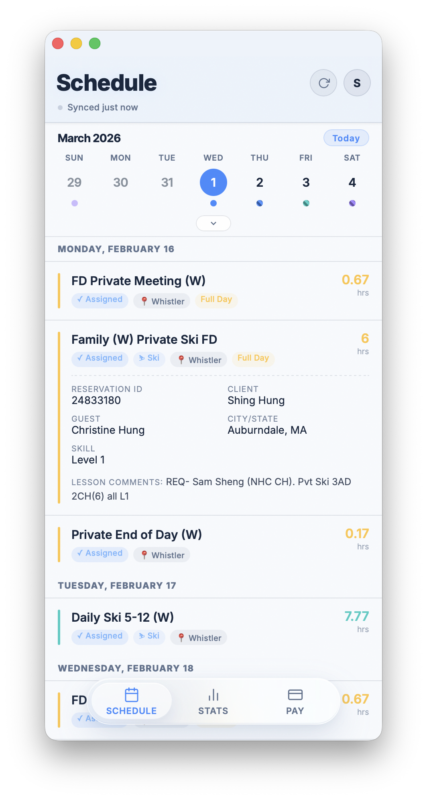
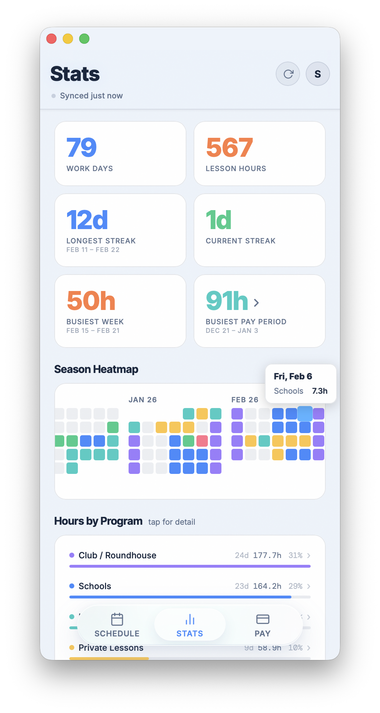
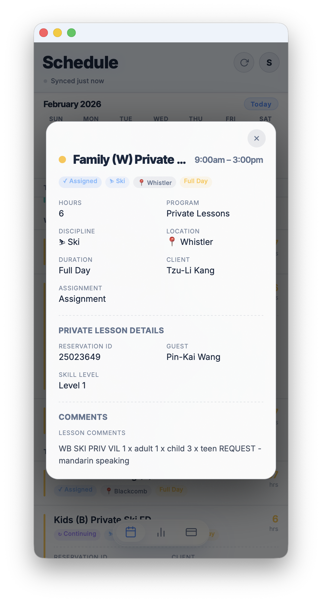
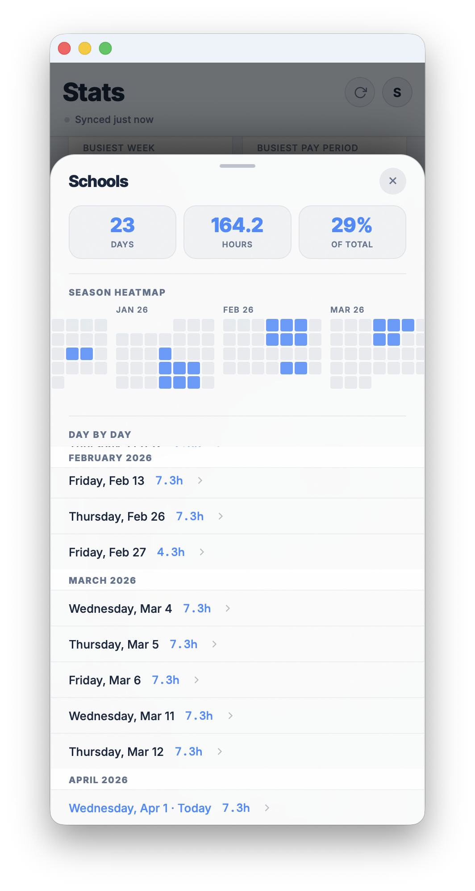
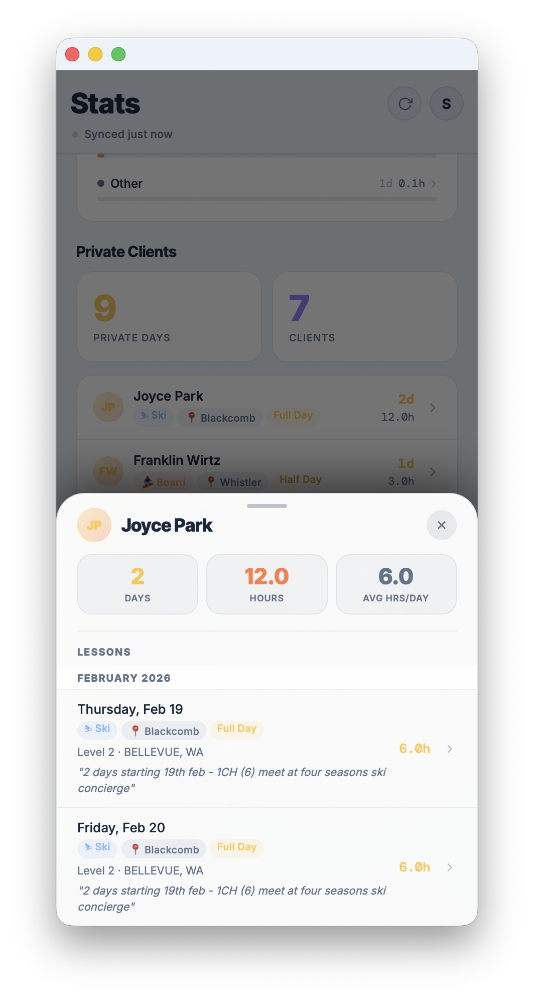
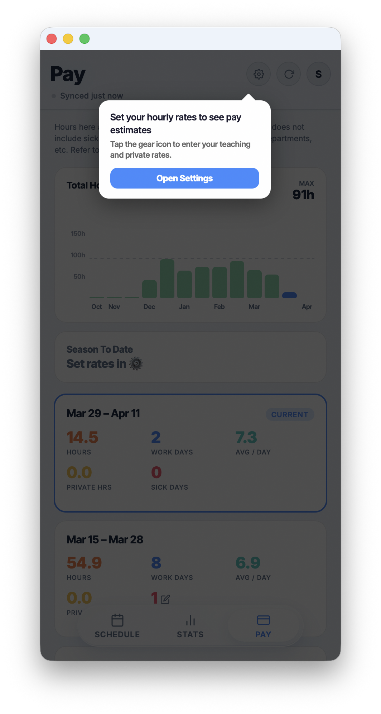
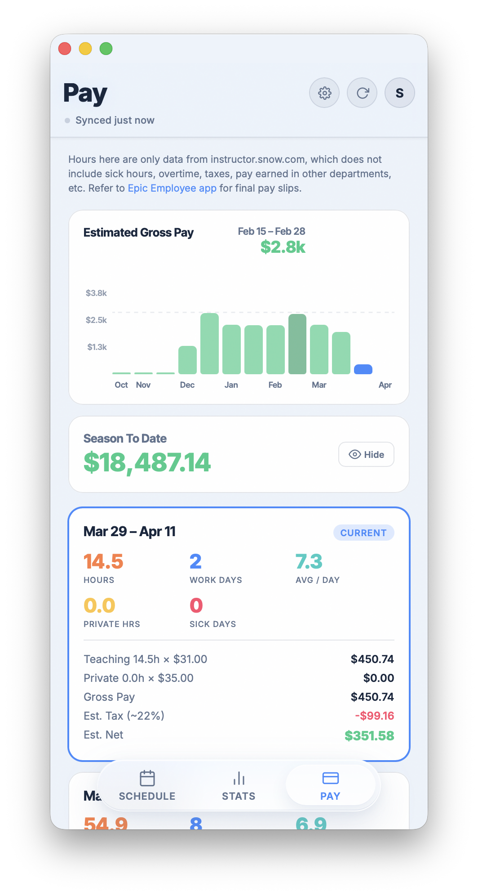

A mobile app for WBSS schedules.
Built by instructors, for instructors.
WhisSchedule takes the daily reality of teaching at Whistler Blackcomb and turns it into a clear,
fast, mobile-first experience. Instead of digging through the portal, instructors get one focused
place to check schedule, track season patterns, understand pay periods, and get oriented in seconds on any phone.
Made from the actual workflow.Designed around what instructors need to see quickly on the mountain.
Fast to scan
Tomorrow's plan without portal friction
30-second setup
No app store and ready on any phone
Useful every day
Schedule, stats, pay, and client history in one app


Three essential instructor needs
Schedule visibility
Season insight
Pay-period context
What changes with WhisSchedule
Three features that make the instructor experience better.
01
Schedule that is actually readable in the moment.
The schedule view organizes the day the way instructors think: by date, assignment, lesson details,
and hours. It removes the friction of interpreting portal rows and makes it easier to move through a
busy teaching day with confidence.
Clear day grouping and lesson detail
Better visibility for private lesson information
Fast mobile scanning between assignments



02
Stats that turn a season into something visible.
WhisSchedule gives instructors a real sense of workload, busiest stretches, lesson mix, and momentum.
That adds value beyond the schedule itself and gives people a clearer understanding of how their season
is unfolding.
Work-day, hour, and streak visibility
Program mix and heatmap storytelling
More useful than simply checking rows in the portal
03
Pay context that makes the app practical week to week.
The pay experience helps instructors connect scheduled hours to pay-period expectations. That makes the
app something people return to regularly, not just a nicer way to open the schedule.
Pay-period summaries tied to scheduled hours
Clear framing as a planning tool
Adds everyday usefulness beyond schedule viewing


Why this deserves adoption
A stronger instructor experience with a product that already feels real.
WhisSchedule is not an abstract concept. It already shows what a cleaner, more instructor-centered
experience can look like for WBSS.
Why is this worth adopting?
It solves a real daily frustration with a clearer mobile experience. Instructors get to tomorrow's
schedule in a single tap instead of working through a slow portal flow, and the product already
demonstrates polish, usefulness, and a strong understanding of the workflow.
What makes it different from the portal?
It is designed around the instructor’s actual use case, not around a generic portal structure.
Schedule, stats, and pay context are presented in a way that is faster to read, easier to act on,
and better suited to mobile use. The brief comparison is simple: the old portal can take 5 to 7 taps
and 15+ seconds just to see tomorrow, while WhisSchedule is built to surface that information almost immediately.
How easy is it for instructors to start using?
It is designed to be live in about 30 seconds on any phone, with no app store step. That lowers the
barrier to adoption and makes it realistic as a practical tool for the broader instructor group.
Why does “built by instructors, for instructors” matter?
The product reflects direct experience with the pain points of teaching at WBSS. That shows up in the
details: what is emphasized, what gets simplified, and what makes the app feel immediately useful.
What extra value does it add beyond the daily schedule?
Beyond the day view, it gives instructors a season summary, full visual heatmap, pay-period context,
and a summarized view of private lesson history. That makes it a genuine companion product, not just a prettier portal wrapper.
How is privacy handled?
The current product position is simple: the login stays on the instructor's phone, nothing is stored
on a server, and the app reads portal data in real time to present it cleanly. That privacy posture is an important part of why the tool feels comfortable to use.
What is the adoption path from here?
The brief outlines three credible paths: official WB adoption, a rebuilt version extended to WB
requirements, or a larger rollout model across more resorts. That gives this product value not just as a prototype, but as a starting point for a broader solution.
What is the core pitch in one sentence?
WhisSchedule is a more usable, mobile-first instructor companion that makes schedules easier to manage,
season patterns easier to understand, and pay periods easier to anticipate.